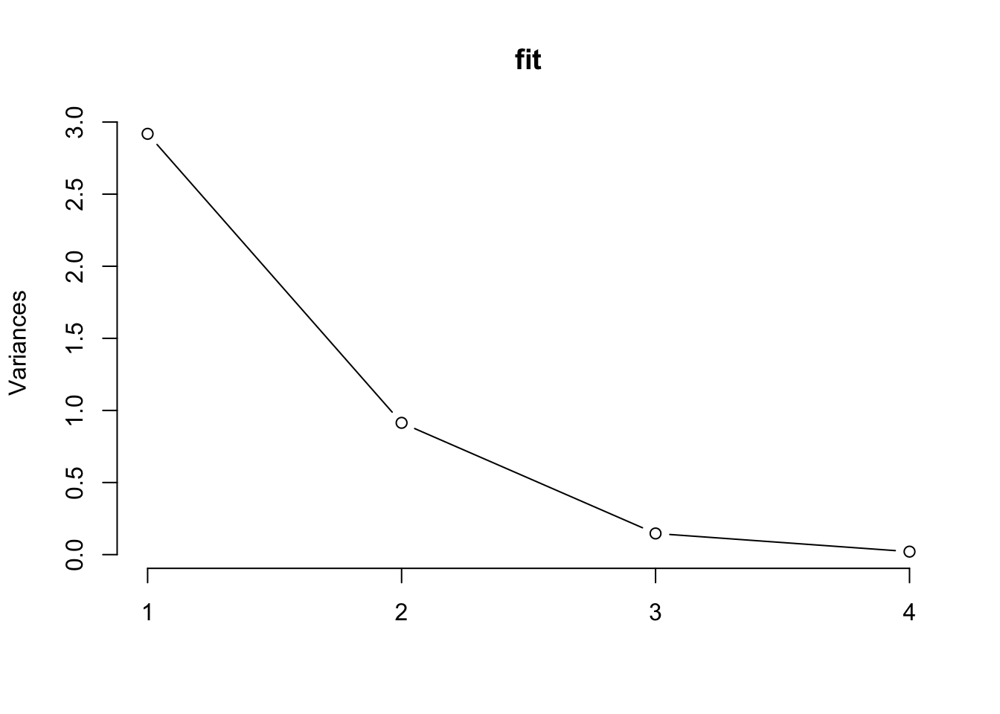
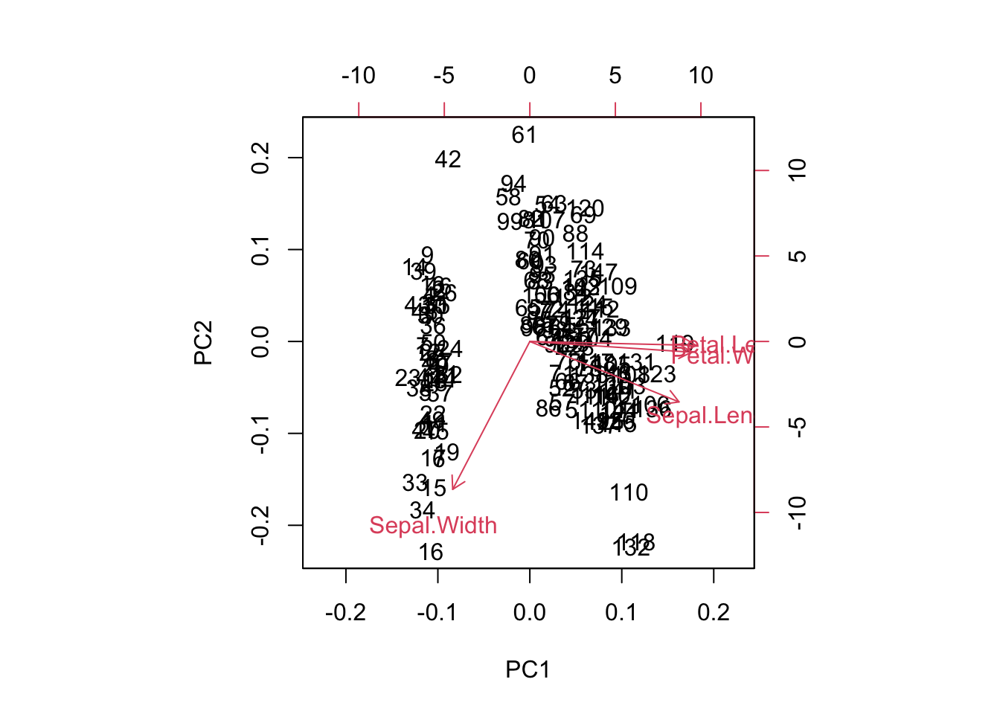
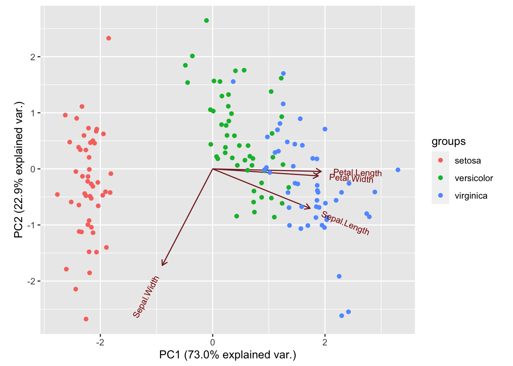
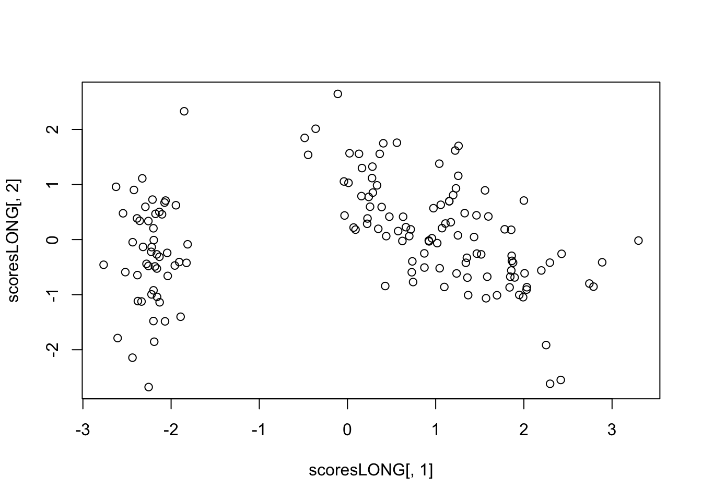

Chapter 14 Ordination
14.1 Libraries and Data
Today, we will work with the package vegan (useful for ordination techniques) and the packages ggplot2 and ggbiplot (useful for fancy plotting). Make sure all these libraries are installed before you begin. To install the package “ggbiplot”, do the following:
install.packages(“devtools”)
library(“devtools”)
install_github(“vqv/ggbiplot”)
Let’s begin by loading the necessary libraries:
library("vegan")## Loading required package: permute##
## Attaching package: 'permute'## The following object is masked _by_ '.GlobalEnv':
##
## permute## The following object is masked from 'package:recipes':
##
## check## The following object is masked from 'package:devtools':
##
## check## Loading required package: lattice##
## Attaching package: 'lattice'## The following object is masked from 'package:boot':
##
## melanoma## Registered S3 method overwritten by 'vegan':
## method from
## print.nullmodel parsnip## This is vegan 2.5-6##
## Attaching package: 'vegan'## The following object is masked from 'package:parsnip':
##
## nullmodellibrary("ggplot2")
library("ggbiplot")## Loading required package: plyr## ------------------------------------------------------------------------------## You have loaded plyr after dplyr - this is likely to cause problems.
## If you need functions from both plyr and dplyr, please load plyr first, then dplyr:
## library(plyr); library(dplyr)## ------------------------------------------------------------------------------##
## Attaching package: 'plyr'## The following objects are masked from 'package:dplyr':
##
## arrange, count, desc, failwith, id, mutate, rename, summarise,
## summarize## The following object is masked from 'package:purrr':
##
## compact## Loading required package: gridWe will use a dataset on measurements of particular parts of the iris plant, across individuals from three different species.
data(iris)14.1.1 Exercise 1: Visualizing the data
Take a look at the iris data matrix. How many samples does it have? How many variables? What happens when you run the function plot() on this matrix? Which variables are most strongly correlated? (use the cor() function to answer this). Why do you think this could be?
14.2 Principal component analysis (PCA)
Perform a PCA of the data. The function prcomp() performs the PCA, and we can assign the result of this function to a new variable (let’s call it “fit”). We must first remove the last column to whatever we give as input to prcomp, as the species names are a non-linear (categorical) variable and we don’t have (for now) any natural measures of distance for species. The option scale=T standardizes the variables to the same relative scale, so that some variables do not become dominant just because of their large measurement unit.
fit<-prcomp(iris[-5], scale=TRUE)If we run the summary function on fit, it indicates that four PCs where created: the number of possible PCs always equals the number of original variables.
summary(fit)## Importance of components:
## PC1 PC2 PC3 PC4
## Standard deviation 1.7084 0.9560 0.38309 0.14393
## Proportion of Variance 0.7296 0.2285 0.03669 0.00518
## Cumulative Proportion 0.7296 0.9581 0.99482 1.00000How much of the variance is explained by PC1? How much is explained by PC2?
plot(fit,type="lines")
The “Rotation” matrix (fit[2]) contains the “loadings” of each of the original variables on the newly created PCs. Take a look at this matrix. The larger the absolute value of a variable in each PC, the more that variable contributes to that PC.
14.2.1 Biplots
We can use the function “biplot” to plot the first two PCs of our data. The plotted arrows provide a graphical rendition of the loadings of each of the original variables on the two PCs.
biplot(fit)
14.2.2 Exercise 2: Interpreting biplots
Across this reduced dimensional space, we can see that particular variables tend to co-vary quite strongly. Which ones? We can also see a separation into two groups on PC1. Which variables do you think would be most different between samples in one group and in the other?
14.2.3 PCA using ggplot
We can make prettier plots using ggplot2 and ggbiplot.
We first extract the variances of the principal components and then plot them:
variances <- data.frame(variances=fit$sdev**2, pcomp=1:length(fit$sdev))
varPlot <- ggplot(variances, aes(pcomp, variances)) + geom_bar(stat="identity", fill="gray") + geom_line()
varPlot
We can also plot the first two PCs, like we had done before in base R, but now coloring the samples by their corresponding species. How are the species distributed along PC1?
Species<-iris$Species
iris_pca <- ggbiplot(fit,obs.scale = 1,
var.scale=1,groups=Species,ellipse=F,circle=F,varname.size=3)
iris_pca
14.2.4 PCA under the hood
Rather than just using a ready-made function to compute a PCA, let’s take a longer route to understand exactly what’s happening under the hood of the prcomp() function.
First, let’s standardize each column of our data so that each column has mean 0 and variance 1
irisdat <- iris[-5]
irisstandard <- apply(irisdat,2,function(x){(x-mean(x))/sd(x)})Now, calculate the covariance matrix. Because the data has been standardized, this is equivalent to calculating the correlation matrix of the pre-standardized data.
cormat <- cov(irisstandard)Then, extract the eigenvalues and eigenvectors of correlation matrix:
myEig <- eigen(cormat)Now, we’ll manually obtain certain values that were automatically computed by the prcomp function when we ran it earlier. We’ll calculate the singular values (square root of eigenvalues) and also obtain the eigenvectors, also called loadings.
sdLONG <- sqrt(myEig$values)
loadingsLONG <- myEig$vectors
rownames(loadingsLONG) <- colnames(irisstandard)Using the loadings, we can plot our original (standardized) data matrix into the new PC-space, by multiplying the data matrix by the matrix of loadings. Plotting the first two rows of the resulting product should reveal the location of our data points in the first two principal components (like we had before):
scoresLONG <- irisstandard %*% loadingsLONG
plot(scoresLONG[,1],scoresLONG[,2])
You can compare the results from the first section (using the ready-made function prcomp) and this section (taking a longer road), to check that the results are equivalent: the minimum and maximum differences in values for the loadings, the scores and standard deviations of the PCs are infinitesimally small.
range(fit$sdev - sdLONG)## [1] -6.661338e-16 2.220446e-16range(fit$rotation - loadingsLONG)## [1] -6.661338e-16 7.771561e-16range(fit$x - scoresLONG) ## [1] -2.359224e-15 3.108624e-1514.3 NMDS
We’ll now perform non-metric multidimensional scaling. Let’s first take a look at the raw data we will use. This is a data matrix containing information about dune meadow vegetation. There are 30 species and 20 sites. Each cell corresponds to the number of specimens of a particular species that has been observed at a particular site (Jongman et al. 1987). As one can see, there are many sites where some species are completely absent (the cell value equals 0):
data(dune)
dune## Achimill Agrostol Airaprae Alopgeni Anthodor Bellpere Bromhord Chenalbu
## 1 1 0 0 0 0 0 0 0
## 2 3 0 0 2 0 3 4 0
## 3 0 4 0 7 0 2 0 0
## 4 0 8 0 2 0 2 3 0
## 5 2 0 0 0 4 2 2 0
## 6 2 0 0 0 3 0 0 0
## 7 2 0 0 0 2 0 2 0
## 8 0 4 0 5 0 0 0 0
## 9 0 3 0 3 0 0 0 0
## 10 4 0 0 0 4 2 4 0
## 11 0 0 0 0 0 0 0 0
## 12 0 4 0 8 0 0 0 0
## 13 0 5 0 5 0 0 0 1
## 14 0 4 0 0 0 0 0 0
## 15 0 4 0 0 0 0 0 0
## 16 0 7 0 4 0 0 0 0
## 17 2 0 2 0 4 0 0 0
## 18 0 0 0 0 0 2 0 0
## 19 0 0 3 0 4 0 0 0
## 20 0 5 0 0 0 0 0 0
## Cirsarve Comapalu Eleopalu Elymrepe Empenigr Hyporadi Juncarti Juncbufo
## 1 0 0 0 4 0 0 0 0
## 2 0 0 0 4 0 0 0 0
## 3 0 0 0 4 0 0 0 0
## 4 2 0 0 4 0 0 0 0
## 5 0 0 0 4 0 0 0 0
## 6 0 0 0 0 0 0 0 0
## 7 0 0 0 0 0 0 0 2
## 8 0 0 4 0 0 0 4 0
## 9 0 0 0 6 0 0 4 4
## 10 0 0 0 0 0 0 0 0
## 11 0 0 0 0 0 2 0 0
## 12 0 0 0 0 0 0 0 4
## 13 0 0 0 0 0 0 0 3
## 14 0 2 4 0 0 0 0 0
## 15 0 2 5 0 0 0 3 0
## 16 0 0 8 0 0 0 3 0
## 17 0 0 0 0 0 2 0 0
## 18 0 0 0 0 0 0 0 0
## 19 0 0 0 0 2 5 0 0
## 20 0 0 4 0 0 0 4 0
## Lolipere Planlanc Poaprat Poatriv Ranuflam Rumeacet Sagiproc Salirepe
## 1 7 0 4 2 0 0 0 0
## 2 5 0 4 7 0 0 0 0
## 3 6 0 5 6 0 0 0 0
## 4 5 0 4 5 0 0 5 0
## 5 2 5 2 6 0 5 0 0
## 6 6 5 3 4 0 6 0 0
## 7 6 5 4 5 0 3 0 0
## 8 4 0 4 4 2 0 2 0
## 9 2 0 4 5 0 2 2 0
## 10 6 3 4 4 0 0 0 0
## 11 7 3 4 0 0 0 2 0
## 12 0 0 0 4 0 2 4 0
## 13 0 0 2 9 2 0 2 0
## 14 0 0 0 0 2 0 0 0
## 15 0 0 0 0 2 0 0 0
## 16 0 0 0 2 2 0 0 0
## 17 0 2 1 0 0 0 0 0
## 18 2 3 3 0 0 0 0 3
## 19 0 0 0 0 0 0 3 3
## 20 0 0 0 0 4 0 0 5
## Scorautu Trifprat Trifrepe Vicilath Bracruta Callcusp
## 1 0 0 0 0 0 0
## 2 5 0 5 0 0 0
## 3 2 0 2 0 2 0
## 4 2 0 1 0 2 0
## 5 3 2 2 0 2 0
## 6 3 5 5 0 6 0
## 7 3 2 2 0 2 0
## 8 3 0 2 0 2 0
## 9 2 0 3 0 2 0
## 10 3 0 6 1 2 0
## 11 5 0 3 2 4 0
## 12 2 0 3 0 4 0
## 13 2 0 2 0 0 0
## 14 2 0 6 0 0 4
## 15 2 0 1 0 4 0
## 16 0 0 0 0 4 3
## 17 2 0 0 0 0 0
## 18 5 0 2 1 6 0
## 19 6 0 2 0 3 0
## 20 2 0 0 0 4 3Note that this data is non-linear, so our first instinct should not be to perform PCA on it. Because NMDS relies on “distances”, we need to specify a distance metric that we’ll use. The function for performing NMDS in the package ‘vegan’ is called metaMDS() and its default distance metric is “bray”, which corresponds to the Bray-Curtis dissimilarity: a statistic used to quantify the compositional dissimilarity between two different sites, based on counts at each site
Let’s perform NMDS ordination using the Bray-Curtis dissimilarity. Remember that, unlike PCA, NMDS requires us to specify the number of dimensions (k) a priori (the default in vegan is 2). It also performs a series of transformations on the data that are appropriate for ecological data (default: autotransform=TRUE). The trymax option ensures that the algorithm is started from different points (in our case, 50) to avoid local minima.
ord <- metaMDS(dune, k=2, autotransform = TRUE, trymax=50)## Run 0 stress 0.1192678
## Run 1 stress 0.1192678
## ... New best solution
## ... Procrustes: rmse 3.579236e-05 max resid 0.0001031411
## ... Similar to previous best
## Run 2 stress 0.1808913
## Run 3 stress 0.1192679
## ... Procrustes: rmse 0.0001317613 max resid 0.00035
## ... Similar to previous best
## Run 4 stress 0.1192682
## ... Procrustes: rmse 0.0002923245 max resid 0.0008893682
## ... Similar to previous best
## Run 5 stress 0.1183187
## ... New best solution
## ... Procrustes: rmse 0.02027487 max resid 0.06500982
## Run 6 stress 0.1192681
## Run 7 stress 0.1980527
## Run 8 stress 0.1192679
## Run 9 stress 0.1922244
## Run 10 stress 0.1192684
## Run 11 stress 0.1192678
## Run 12 stress 0.1183186
## ... New best solution
## ... Procrustes: rmse 5.640452e-05 max resid 0.0001599663
## ... Similar to previous best
## Run 13 stress 0.1192683
## Run 14 stress 0.1192678
## Run 15 stress 0.1183186
## ... New best solution
## ... Procrustes: rmse 9.881256e-05 max resid 0.0002670525
## ... Similar to previous best
## Run 16 stress 0.1812935
## Run 17 stress 0.1183186
## ... Procrustes: rmse 5.593967e-05 max resid 0.0001848075
## ... Similar to previous best
## Run 18 stress 0.1183186
## ... Procrustes: rmse 0.0001121892 max resid 0.0003676583
## ... Similar to previous best
## Run 19 stress 0.1192685
## Run 20 stress 0.1192678
## *** Solution reachedAs you can see, the function goes through a series of steps until convergence is reached. Let’s plot the results:
par(mfrow=c(1,2))
plot(ord,display="sites",main="NMDS ordination of sites",type="t")
plot(ord,display="species",main="NMDS ordination of species",type="t")
par(mfrow=c(1,1))14.3.1 Exercise 3: interpreting NMDS plots
What do these plots tell you about the distribution of species across sites? Which species tend to co-occcur with each other? Which sites tend to have similar species compositions?
Try changing the number of dimensions or the distance metric used. You can take a look at the list of possible distances and their definitions using “?vegdist”. Do the results change? Why?